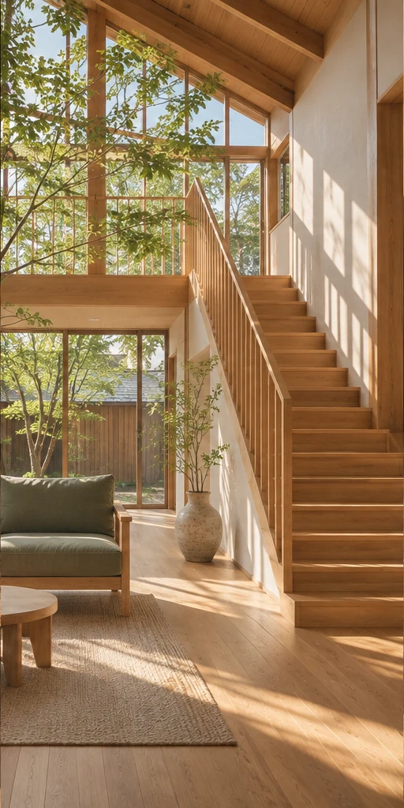

新しい住まい
生活の動線や光の入り方から、家族に合った住まいを考えます。

WOOD / LIGHT / EVERYDAY LIFE自主制作／架空サイト · 実在の事業者・施工実績ではありません
OUR PHILOSOPHY
朝の光をどこで感じたいか。
家族で、どんな時間を過ごしたいか。
木と日々の工務店は、そんな小さな会話から
住まいを考える、架空の地域工務店です。
新しく建てることも、今ある家を整えることも。
心地よい日々につながる選択を、一緒に考えます。
OUR SERVICES
生活の動線や光の入り方から、家族に合った住まいを考えます。
間取りや素材を見直して、慣れ親しんだ家に新しい居心地を。
建具や日々の使いづらさなど、暮らしの気になることから相談を。
サービス内容はデモ設定です。実際の工事は受け付けていません。
HOUSE STORIES
すべて架空の施工サンプルです。
写真は生成イメージであり、実績ではありません。
01 / 新築サンプル
吹き抜けと木の階段がつなぐ、家族の気配。
架空の施工サンプル02 / リノベーションサンプル
好きな椅子を置きたくなる、明るい居場所。
架空の施工サンプル／オリジナルイラストHOW WE WORK
ご希望や気になっていることを整理。
場所や条件を確認し、可能性を考えます。
内容・費用・進め方を一緒に検討。
確認を重ねながら、暮らしの形へ。
架空のサービスフローです。契約・施工は行いません。
CONTACT / DEMO
入力から確認まで体験できます。
外部送信・保存は行いません。
実際の個人情報は入力しないでください。